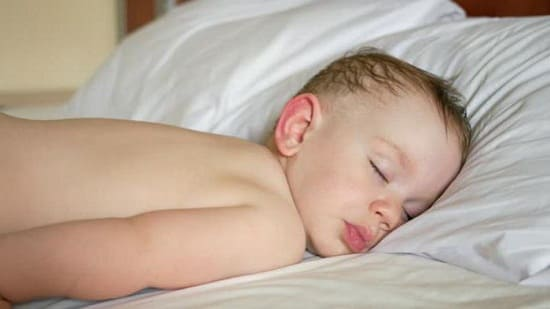
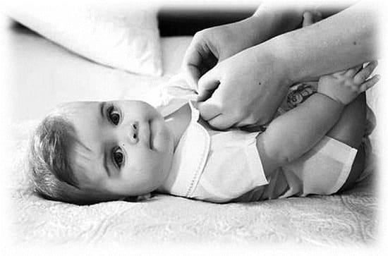
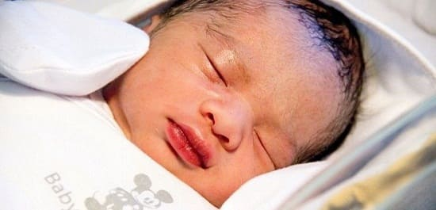

У большинства детей запах пота из-под мышек в препубертатный период — не более чем неприятная особенность. Вопреки широко распространенному мнению, сам пот не пахнет. Специфический запах появляется, когда пот попадает на кожу. Некоторые дети потеют слишком сильно — отклонение, называемое гипергидрозом. У некоторых детей потовыделение, свойственное периоду полового созревания, начинается раньше — в 6—8 лет. Хотя то, насколько сильно ваш ребенок потеет, детерминировано генетически, хорошая новость в том, что вы можете очень много сделать для уменьшения запаха.
СОВЕТ ДОКТОРОВ СИРС: ПОЧАЩЕ ИСПОЛЬЗУЙТЕ СЛОВО «ОСОБЕННОСТЬ» Обсуждая необычное поведение, результаты медицинских исследований, телесные неприятности, старайтесь чаще использовать термин «особенность», а не «заболевание», «болезнь» и т.п. «Особенность» означает просто безобидное отклонение и не вызывает у ребенка смущения и переживаний. |
Объясните своему ребенку: «У всех есть свои особенности. У тебя — такая, но вот что мы сделаем...» Используя слово «особенность», вы помогаете ребенку не впасть в крайность «нет пота — нет проблемы». Мы часто используем термин «особенность» и считаем его менее субъективным и беспокоящим.
ПРИЧИНЫ
Для начала давайте разберемся, как ребенок потеет и как воспрепятствовать появлению неприятного запаха. У некоторых детей потовые железы более активны, а на коже живет больше бактерий. В коже ребенка — несколько миллионов потовых желез. У маленьких детей они недоразвиты, и поэтому они потеют меньше. С возрастом потовые железы созревают, достигая полного развития в пубертатный период, когда начинают работать в полную силу. Организм производит два вида пота. Потовые железы, расположенные в гладкой коже, вырабатывают пот, который состоит в основном из воды и практически не пахнет. В потовых железах, которые находятся в областях оволосения — паховых, подмышечных складках, — вырабатывается пот, содержащий некоторые белки и жировые вещества. Бактерии, которые в норме живут на коже, питаются этими веществами и процветают, выпуская дурно пахнущие газы. Запомните, это важно: бактерии питаются потом, вырабатывая запах. Следовательно, чтобы избавиться от запаха, надо контролировать бактерии.
Чрезмерный запах из-под мышек может быть признаком раннего или преждевременного пубертата. Обязательно упомяните об этой особенности своего ребенка во время планового врачебного осмотра. Врач проверит у ребенка наличие других признаков полового созревания, таких, как рост волос не лобке, в подмышечных впадинах и на лице, увеличение груди. Если, кроме запаха пота, нет никаких вторичных половых признаков, то эту проблему можно счесть безопасной, а не признаком возможного заболевания.

ШЕСТЬ СПОСОБОВ ПОМОЧЬ РЕБЕНКУ УМЕНЬШИТЬ ЗАПАХ ПОТА
1. Помогите ребенку понять, что потливость — это его особенность. Повышенное потоотделение — наследственная склонность, особенно усиленная потливость ладоней и стоп. Если ваш ребенок унаследовал эту склонность, объясните ему, что это всего лишь особенность организма, которая не означает, что у него есть какие-либо нарушения. Расскажите, что частью общей гигиены является и забота о своих особенностях. Некоторые люди больше потеют при употреблении пряной пищи. Эмоции могут заставить вас вспотеть, особенно на ладонях, стопах и над верхней губой. Это не означает ничего плохого.
2. Содержите кожу в чистоте. Как вы узнали выше, запах вызывают бактерии, питающиеся жировыми веществами, которые содержатся в поте. Следовательно, чем меньше бактерий — тем слабее запах. Научите своего ребенка, что запах — это результат жизнедеятельности бактерий. Он должен понять, что вода и мыло, смывая «жучков», препятствуют образованию запаха. Когда ребенок понимает, зачем нужно мыться, он с большей охотой будет делать это. Убедитесь, что он хорошо смывает мыло. Научите его несколько раз в день промывать под мышками, особенно после бурных игр. Покажите ему, что вытираться надо полностью, не оставляя влажных участков и складок, особенно в подмышках, в паху и между пальцами ног, так как иначе бактерии там могут начать усиленно размножаться. Напоминайте ему, что чем меньше времени бактерии проведут на коже, разлагая пот и создавая запах, тем лучше.
Учтите, что высыпания под мышками особенно часто встречаются у детей, использующих дезодоранты. Пользоваться дезодорантом — хорошо, но вместе, а не вместо вышеперечисленных способов контроля потовыделения. Применение дезодоранта/антиперспиранта оправданно, только когда повышенная потливость становится сильно заметна (в период полового созревания). |

3. Проветривайте потеющие места. Самый дурнопахнущий пот образуется на постоянно закрытых участках кожи, таких как подмышечные и паховые складки. Ношение свободной одежды из хлопчатобумажных тканей, которая позволяет коже дышать и проветриваться, задержит развитие бактерий и образование запаха.
4. Кормите кожу хорошей пищей. То, что ест ваш ребенок, может влиять на запах его пота. Если потовыделение — часть очистительной системы организма, то чем меньше мусора вы закинете в него, тем меньше ему придется выводить. В своей практике мы наблюдаем много подтверждений этого. Матери, придерживающиеся диет с «чистыми» продуктами (органическими или необработанными), отмечают уменьшение запаха пота от их детей. Ваш ребенок должен усвоить, что мусорная пища засоряет пот.
5. При необходимости используйте дезодоранты, но не пользуйтесь антиперспирантами. Как подразумевает название, дезодоранты маскируют запах пота. С другой стороны, антиперспиранты — это химические вещества, которые фактически отключают потовые железы, уменьшая потовыделение. Мы возражаем против применения антиперспирантов, особенно у детей, поскольку многие из них содержат раздражающие вещества. Кроме того, выключение потовых желез — путь к их воспалению. Используйте самый слабый дезодорант, какой только возможно.
6. Не переусердствуйте. Лучше не раздувать проблему из запаха пота вашего ребенка. Дети очень чувствительны и часто приходят к выводу, что «раз мой пот плохо пахнет, значит, я — вонючка». Поэтому, если ваш ребенок спросит, объясните, что у некоторых людей есть такая особенность и это одна из небольших неприятностей в его жизни, с которыми вы можете помочь справиться. Чем меньше ребенок будет видеть, что это беспокоит вас, тем меньше он будет беспокоиться сам.
Здоровье ребенка от докторов Сирс / Сирс У. и др.